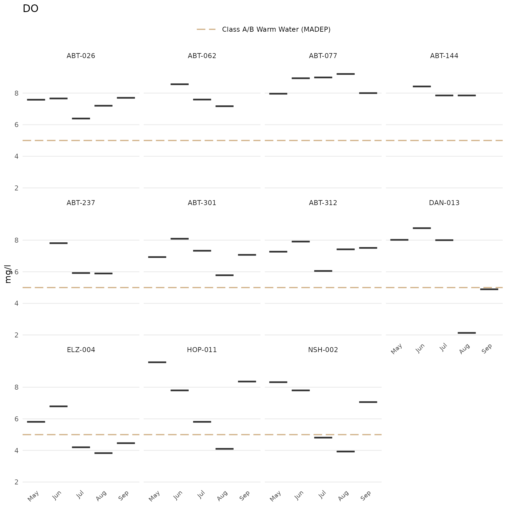
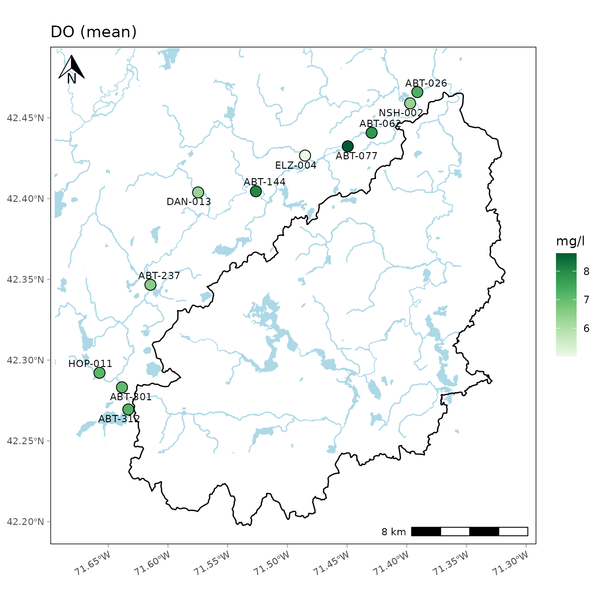

The default format for plots created from any of the analyze
functions, including the outlier
plots, should be sufficient in most cases. However, the plot outputs
are ggplot() objects and can be modified using common
ggplot() plot functions (see the ggplot2 page for details). A brief overview of
ggplot2 is provided here as context to the MassWateR plot modifications
below.
ggplot2
The ggplot2 package was developed following a strict philosophy known as the grammar of graphics. This philosophy was designed to make thinking, reasoning, and communicating about graphs easier by following a few simple rules.
First, ggplot2 is loaded.
A plot can be created with the function ggplot(). This
creates an empty coordinate system for adding layers. The first argument
of ggplot() is the dataset to use in the graph. The
following creates an empty base graph for the mpg dataset
included with ggplot2.
ggplot(data = mpg)The next step is to add one or more layers (aka geoms)
to the ggplot() function. The function
geom_point() adds a layer of points to the plot. The
ggplot2 package includes many geom functions that each add a different
type of layer to a plot. Note the use of the + syntax to
build the plot - this is a distinct style of coding that is only used
with ggplot2.
ggplot(data = mpg) +
geom_point()Each geom function in ggplot2 requires a mapping
argument. This defines how variables in a dataset are mapped to visual
properties. The mapping argument is defined with
aes(), and the x and y arguments
of aes() specify which variables to map to the x and y
axes. The ggplot() function looks for the mapped variable
in the data argument, in this case, mpg.
ggplot(data = mpg, mapping = aes(x = displ, y = hwy)) +
geom_point()
Every ggplot follows these rules:
- Each plot starts with the
ggplot()function - Each plot needs three pieces of information: the data, how the data are mapped to the plot aesthetics, and a geom layer
Please visit the ggplot2 website for more information.
Modifying MassWateR plots
For plots in MassWateR, additional components can be added using the
+ notation as for a standard ggplot() object.
This is distinct from using any of the default arguments for the plots
to change the appearance (e.g., fill = "red"). Overriding
some of the existing plot components may also significantly alter the
appearance, so use caution. Also note that adding ggplot2 components to
an existing MassWateR plot may or may not work based on how the plot is
setup. For higher levels of customization, we recommend creating a
custom ggplot from scratch, using data from the results file that you
loaded for MassWateR. To prepare the results file for use, you can use
the utilMWRlimits()
function to populate values outside detection limits and remove QC
rows.
Before we can modify any plots, the required input files for the MassWateR analyze functions are imported, using the files included with the package for the examples. The checks and warnings are suppressed because we know the files are formatted correctly.
library(MassWateR)
# import results data
respth <- system.file("extdata/ExampleResults.xlsx", package = "MassWateR")
resdat <- readMWRresults(respth, runchk = F, warn = F)
# import accuracy data
accpth <- system.file("extdata/ExampleDQOAccuracy.xlsx", package = "MassWateR")
accdat <- readMWRacc(accpth, runchk = F)
# import site metadata
sitpth <- system.file("extdata/ExampleSites.xlsx", package = "MassWateR")
sitdat <- readMWRsites(sitpth, runchk = F)
fsetls <- list(res=resdat, acc=accdat, sit=sitdat)Below are a few examples of additions to change the standard plot,
using anlzMWRseason() for demonstration. A single plot
object for the original plot is created as p and is
modified differently in each example.
p <- anlzMWRseason(fset = fsetls, param = "DO", thresh = "fresh", group = "month")Modify plot labels:
p +
labs(
x = "Month",
y = "Dissolved oxygen (mg/L)",
title = "Seasonal summaries for dissolved oxygen"
)Modify the theme:
p + theme_grey()
Notice how the default legend placement and x-axis text were altered
by changing the theme. These can be changed by combining a preset theme
(e.g., theme_bw()) with additional theme()
elements.
p +
theme_bw() +
theme(
axis.text = element_text(size = 14),
legend.position = "bottom"
)
The axis limits can be changed using coord_cartesian().
Changing the y-axis requires only the numeric range using the
ylim argument.
p + coord_cartesian(ylim = c(0, 8))A plot with facets for each site:
p + facet_wrap(~`Monitoring Location ID`)
Switch the axes:
p + coord_flip()
Add a custom reference line (although the thresh
argument can also be used with a numeric value):
p +
geom_hline(yintercept = 10, linetype = 'solid', color = 'green', size = 2)
#> Warning: Using `size` aesthetic for lines was deprecated in ggplot2 3.4.0.
#> ℹ Please use `linewidth` instead.
#> This warning is displayed once every 8 hours.
#> Call `lifecycle::last_lifecycle_warnings()` to see where this warning was
#> generated.Additional layers can also be added to maps created with
anlzMWRmap(). For example, a watershed shapefile can be
imported as a simple features object using the sf package,
then added using geom_sf() from ggplot. Any warnings about
the coordinate system can be ignored. Depending on the watershed
boundaries, it may be necessary to adjust the extent of the water
features (with buffdist) and/or the boundaries of the map
box (with coord_sf()).
library(sf)
library(ggplot2)
# import shapefile as sf object
sudburyMWR <- st_read(dsn='C:/Documents/MapLayers', layer='sudburyMWR')
# use geom_sf to add watershed
anlzMWRmap(fset = fsetls, param = 'DO', addwater = 'high', buffdist = 3) +
geom_sf(data = sudburyMWR) +
coord_sf(xlim = c(-71.68, -71.31), ylim = c(42.20, 42.48))
Sometimes you might want to place two plots side by side in the same
plot window. The patchwork package allows you to easily do this with
ggplot. Two or more plots are first created and then combined using the
+ syntax followed by the plot layout (e.g., plots in two
columns using ncol = 2).
library(patchwork)
p1 <- anlzMWRseason(fset = fsetls, param = "DO", thresh = "fresh", group = "month")
p2 <- anlzMWRseason(fset = fsetls, param = "pH", thresh = "fresh", group = "month")
p1 + p2 + plot_layout(ncol = 2)